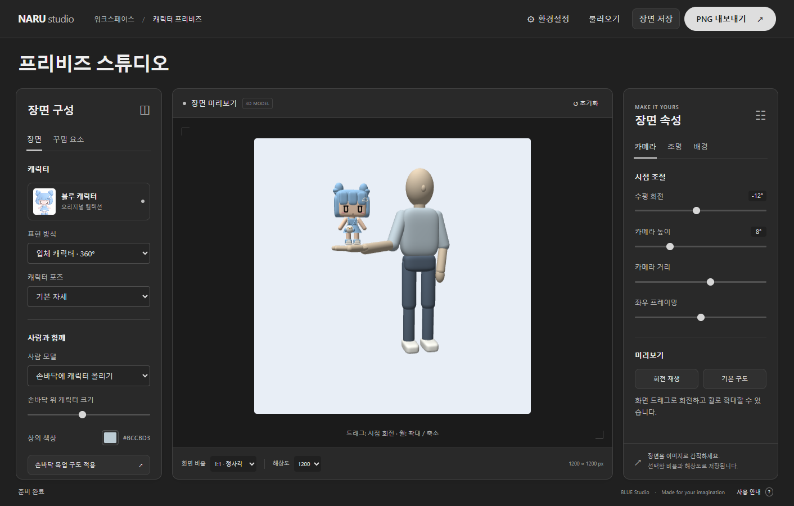
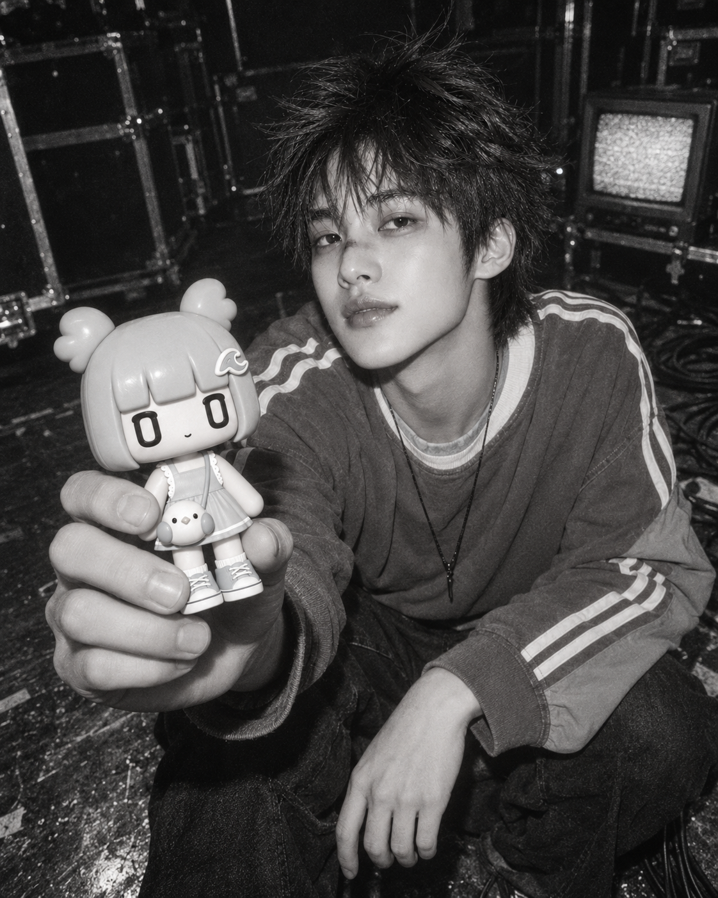

3D PREVIS · AI PHOTO구도를 만들고,
구도를 만들고,
화보로 완성하다.
구도와 조명을 설계하고,
NØISE 로브의 광고 화보로 완성합니다.

NARU studio
프리비즈 스튜디오
캐릭터와 사람 모델의 구도부터 카메라 화각, 조명과 배경까지. 원하는 장면을 미리 확인하고 이미지로 저장할 수 있습니다.
- 3D 시점 · 광각 조절
- 조명 · 배경 편집
- PNG · 장면 저장

NØISE · ROV
로브와 함께한 피규어 광고 화보
전경의 피규어와 얼굴이 함께 드러나는 광각 구도에 흑백 플래시, 필름 입자와 백스테이지 무드를 더한 AI 제작 광고 예시입니다.